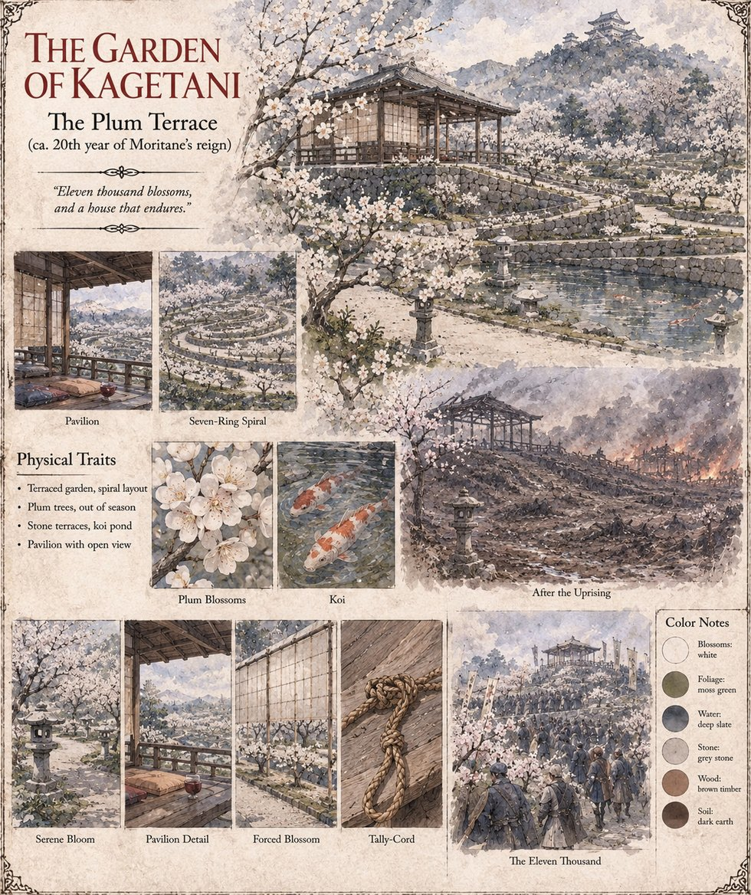

The Garden of Kagetani
The plum terrace · Lord Moritane’s ornamental garden · the case’s Second Most Important Element · the chroniclers’ “Unjust Garden”
Moritane’s ornamental terraced garden, commissioned in his twenty-second year and grown until it holds a full third of the arable land nearest the castle, with an open pavilion from which he watches it (Part One, The Persimmons on the Ledger). Its newest terrace, the plum terrace, winds outward in a seven-ring spiral whose rings hold one tree, then one, two, three, five, eight and thirteen, set by the head gardener entirely by eye. Its plums bloom out of season under paper screens and charcoal braziers, tended by the best-paid men in Kagetani (Part Four, Eleven Thousand Blossoms, More or Less).
It is the reason the tax rose three times, the ground the stone’s first yes took from forty-one households, the stage on which Moritane dies, and the object the chronicles name the whole uprising after: the Unjust Garden, in the Epilogue. The package’s fourth title option calls that the chroniclers’ sanitised name for the war, the very mis-naming the book exists to expose. The old songs’ Eleven Thousand Vow promises that a house that completes one unbroken garden of eleven thousand blossoms will hold its domain as long as the garden holds its bloom (Part One; Epilogue). The Archival Log’s note sets the Vow’s unattained eleven thousand against the eleven thousand who finally come. The pack files the garden as the case’s Second Most Important Element, after the stone; the runner-up was Jakuen-ji’s burned ledgers.
The terraces, the ring counts, the forcing and the trampling are the manuscript’s. The pond, the gravel paths, the koi and the pavilion’s proportions are the pack’s. The sheet shows a timber pavilion on a low rise above stone-faced terraces, a still pond with koi, stone lanterns and the castle on a far hill. Its panels are Pavilion, with cushions and a wine cup on the rail; Seven-Ring Spiral; Plum Blossoms; Koi; Serene Bloom; Pavilion Detail; Forced Blossom, with paper screens; Tally-Cord, a knotted rope on timber; After the Uprising, churned mud and a burning skyline round the ruined pavilion frame; and The Eleven Thousand, a dense crowd climbing toward the pavilion. Its subtitle reads “ca. 20th year of Moritane’s reign”, where the manuscript dates the commissioning to his twenty-second year, and this page does not reconcile the two. The line “Eleven thousand blossoms, and a house that endures.” is the sheet’s own.